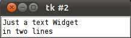
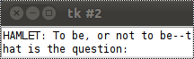
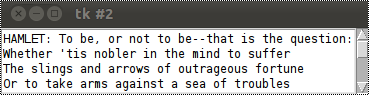
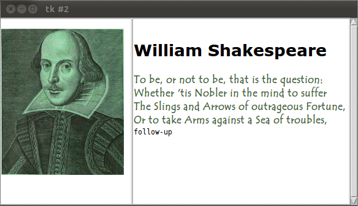

Text Widgets
Introduction and Simple Examples
A text widget is used for multi-line text area. The Tkinter text widget is very powerful and flexible and can be used for a wide range of tasks. Though one of the main purposes is to provide simple multi-line areas, as they are often used in forms, text widgets can also be used as simple text editors or even web browsers.
Furthermore, text widgets can be used to display links, images, and HTML, even using CSS styles.
In most other tutorials and text books, it's hard to find a very simple and basic example of a text widget. That's why we want to start our chapter with a such an example:
We create a text widget by using the Text() method. We set the height to 2, i.e. two lines and the width to 30, i.e. 30 characters. We can apply the method insert() on the object T, which the Text() method had returned, to include text. We add two lines of text.
from Tkinter import * root = Tk() T = Text(root, height=2, width=30) T.pack() T.insert(END, "Just a text Widget\nin two lines\n") mainloop()
The result should not be very surprising:

Let's change our little example a tiny little bit. We add another text, the beginning of the famous monologue from Hamlet:
from Tkinter import * root = Tk() T = Text(root, height=2, width=30) T.pack() quote = """HAMLET: To be, or not to be--that is the question: Whether 'tis nobler in the mind to suffer The slings and arrows of outrageous fortune Or to take arms against a sea of troubles And by opposing end them. To die, to sleep-- No more--and by a sleep to say we end The heartache, and the thousand natural shocks That flesh is heir to. 'Tis a consummation Devoutly to be wished.""" T.insert(END, quote) mainloop()
If we start our little script, we get a very unsatisfying result. We can see in the window only the first line of the monologue and this line is even broken into two lines. We can see only two lines in our window, because we set the height to the value 2. Furthermpre, the width is set to 30, so Tkinter has to break the first line of the monologue after 30 characters.

One solution to our problem consists in setting the height to the number of lines of our monologue and set width wide enough to display the widest line completely.
But there is a better technique, which you are well acquainted with from your browser and other applications: scrolling
Scrollbars
So let's add a scrollbar to our window. To this purpose, Tkinter provides the Scrollbar() method. We call it with the root object as the only parameter.from Tkinter import * root = Tk() S = Scrollbar(root) T = Text(root, height=4, width=50) S.pack(side=RIGHT, fill=Y) T.pack(side=LEFT, fill=Y) S.config(command=T.yview) T.config(yscrollcommand=S.set) quote = """HAMLET: To be, or not to be--that is the question: Whether 'tis nobler in the mind to suffer The slings and arrows of outrageous fortune Or to take arms against a sea of troubles And by opposing end them. To die, to sleep-- No more--and by a sleep to say we end The heartache, and the thousand natural shocks That flesh is heir to. 'Tis a consummation Devoutly to be wished.""" T.insert(END, quote) mainloop( )
The result is a lot better. We have now always 4 lines in view, but all lines can be viewed by using the scrollbar on the right side of the window:

Text Widget with Image
In our next example, we add an image to the text and bind a command to a text line:
from Tkinter import *
root = Tk()
text1 = Text(root, height=20, width=30)
photo=PhotoImage(file='./William_Shakespeare.gif')
text1.insert(END,'\n')
text1.image_create(END, image=photo)
text1.pack(side=LEFT)
text2 = Text(root, height=20, width=50)
scroll = Scrollbar(root, command=text2.yview)
text2.configure(yscrollcommand=scroll.set)
text2.tag_configure('bold_italics', font=('Arial', 12, 'bold', 'italic'))
text2.tag_configure('big', font=('Verdana', 20, 'bold'))
text2.tag_configure('color', foreground='#476042',
font=('Tempus Sans ITC', 12, 'bold'))
text2.tag_bind('follow', '<1>', lambda e, t=text2: t.insert(END, "Not now, maybe later!"))
text2.insert(END,'\nWilliam Shakespeare\n', 'big')
quote = """
To be, or not to be, that is the question:
Whether 'tis Nobler in the mind to suffer
The Slings and Arrows of outrageous Fortune,
Or to take Arms against a Sea of troubles,
"""
text2.insert(END, quote, 'color')
text2.insert(END, 'follow-up\n', 'follow')
text2.pack(side=LEFT)
scroll.pack(side=RIGHT, fill=Y)
root.mainloop()
